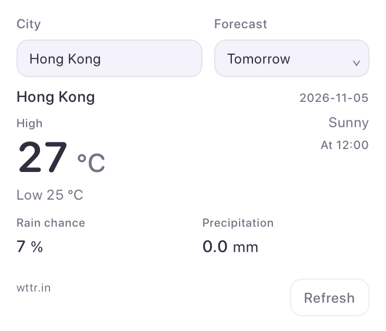
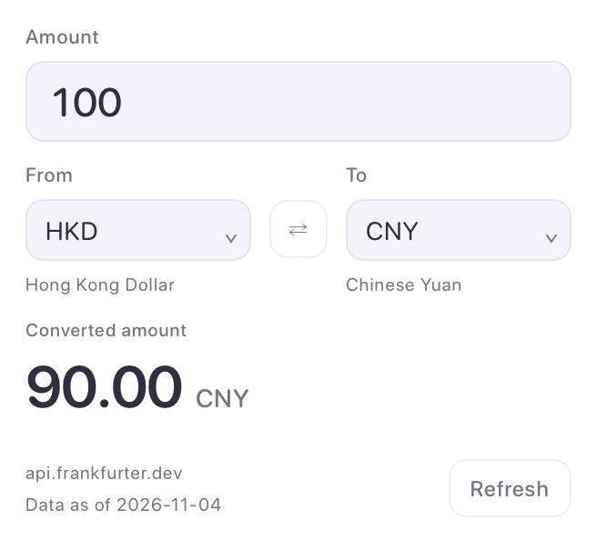
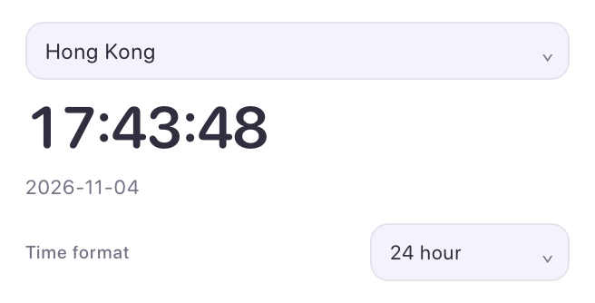
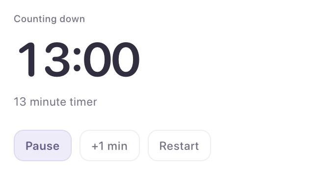
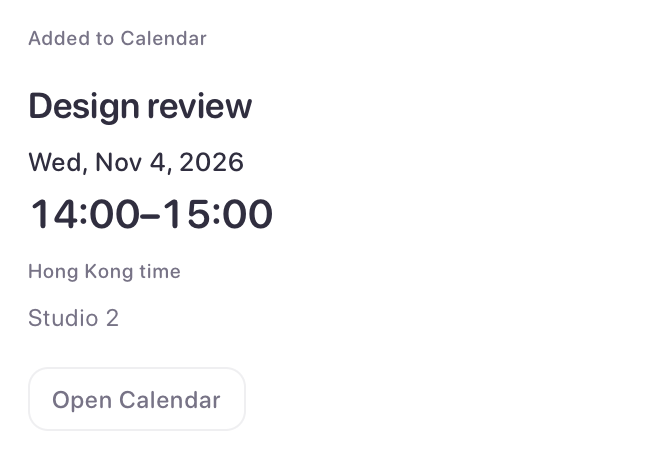

<!doctype html><html lang="zh-CN"><meta charset="utf-8"><meta name="viewport" content="width=device-width,initial-scale=1"><title>Orvlet · 六种预制卡片</title><style>
:root{color-scheme:light;--bg:#faf9fd;--card:#f3f1f9;--ink:#302e3f;--muted:#777386;--line:#302e3f16}html[data-theme=dark]{color-scheme:dark;--bg:#1c1b24;--card:#282635;--ink:#f0edf8;--muted:#aaa5bb;--line:#ffffff16}*{box-sizing:border-box}body{margin:0;padding:36px;font-family:ui-rounded,-apple-system,BlinkMacSystemFont,sans-serif;background:var(--bg);color:var(--ink)}main{max-width:1100px;margin:auto}header{display:flex;justify-content:space-between;align-items:center;margin-bottom:28px}h1{font-size:24px;font-weight:550;margin:0 0 8px}p{font-size:12px;color:var(--muted);margin:0}button,a{font:inherit;color:inherit}button{background:var(--card);border:1px solid var(--line);padding:9px 16px;border-radius:10px;cursor:pointer}.grid{display:grid;grid-template-columns:repeat(3,minmax(0,1fr));gap:22px;align-items:start}figure{margin:0;border:1px solid var(--line);border-radius:18px;overflow:hidden;background:var(--card)}figcaption{font-size:13px;padding:16px 16px 5px;display:flex;justify-content:space-between;gap:12px}figcaption span{font-size:11px;color:var(--muted)}img{display:block;width:100%;height:auto}footer{display:flex;gap:22px;margin-top:28px;font-size:12px;color:var(--muted)}@media(max-width:800px){.grid{grid-template-columns:repeat(2,minmax(0,1fr))}body{padding:22px}}@media(max-width:520px){.grid{grid-template-columns:1fr}}
</style><main><header><div><h1>六种预制卡片</h1><p>应用真实渲染 · 测试数据</p></div><button id="theme" aria-label="切换浅色与深色">深色</button></header><div class="grid"><figure><figcaption>天气<span>Weather</span></figcaption></figure><figure><figcaption>汇率<span>Currency</span></figcaption></figure><figure><figcaption>时钟<span>Clock</span></figcaption></figure><figure><figcaption>音乐<span>Music</span></figcaption></figure><figure><figcaption>计时器<span>Timer</span></figcaption></figure><figure><figcaption>日历<span>Calendar</span></figcaption></figure></div><footer><a id="settings" href="settings-light.png">精简后的设置</a><a href="clock-multiple.png">三时区</a><a href="checks.json">交互检查记录</a></footer></main><script>document.querySelector('#theme').onclick=()=>{const dark=document.documentElement.dataset.theme!=='dark';document.documentElement.dataset.theme=dark?'dark':'light';document.querySelector('#theme').textContent=dark?'浅色':'深色';for(const img of document.querySelectorAll('[data-card]'))img.src=img.dataset.card+'-'+(dark?'dark':'light')+'.png';document.querySelector('#settings').href='settings-'+(dark?'dark':'light')+'.png'};</script></html>